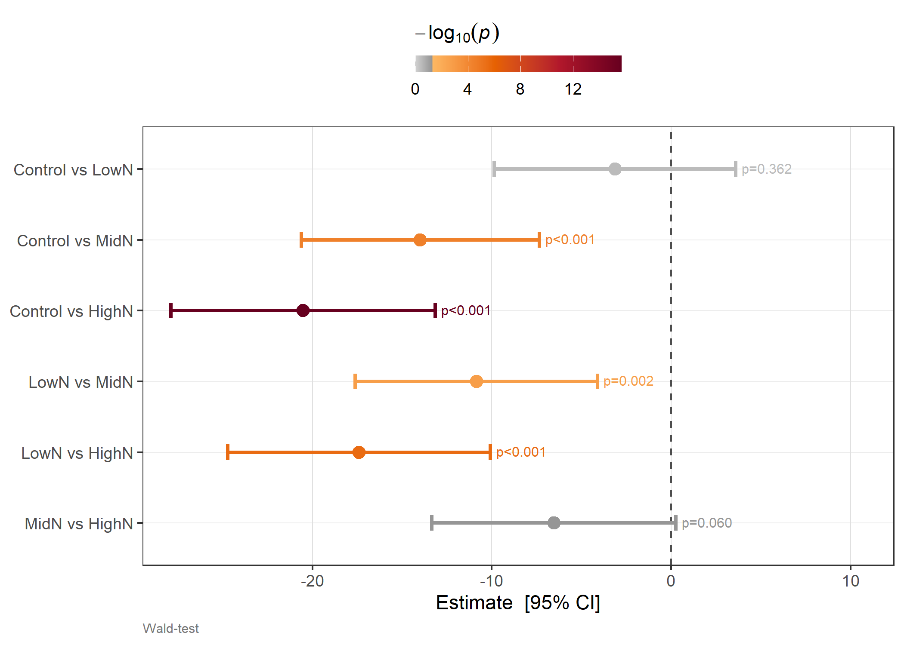
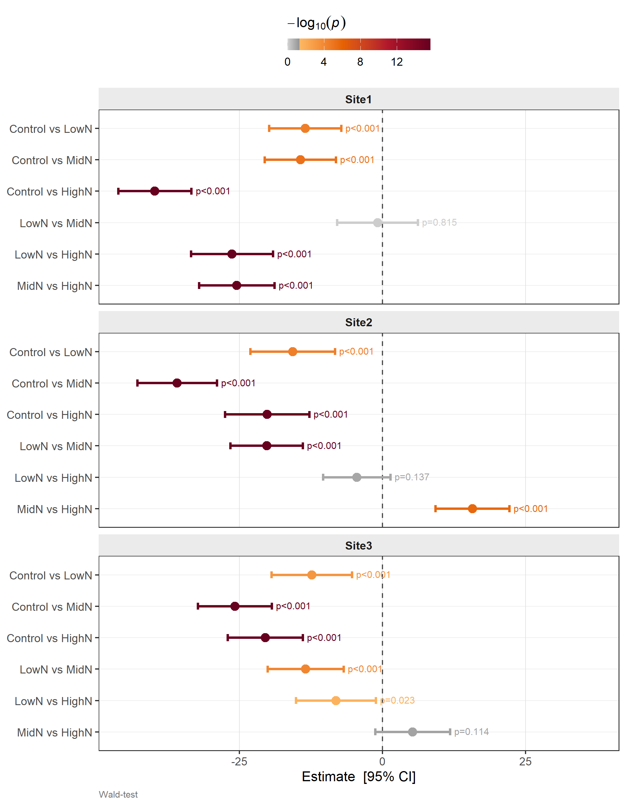
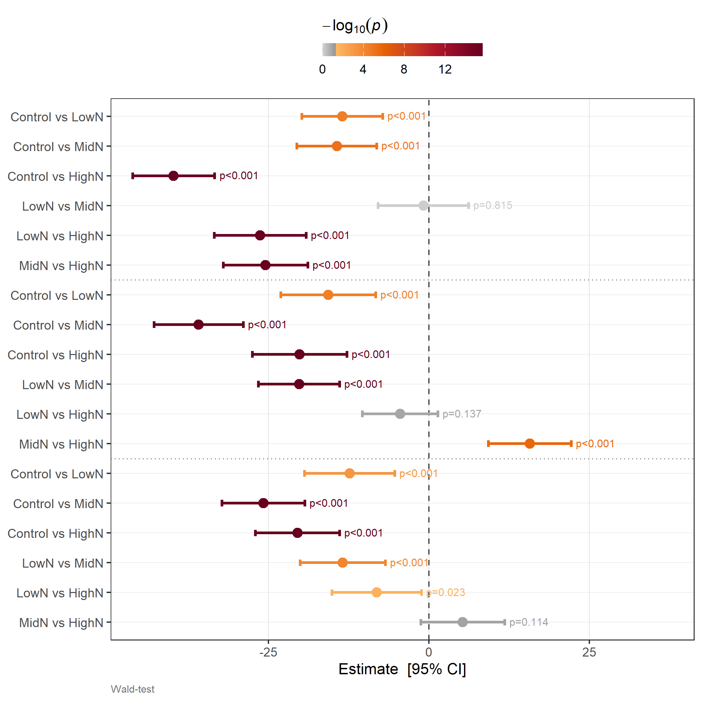
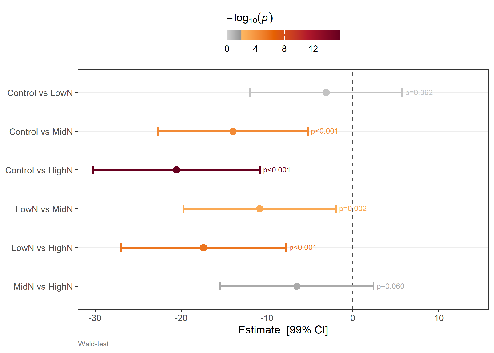
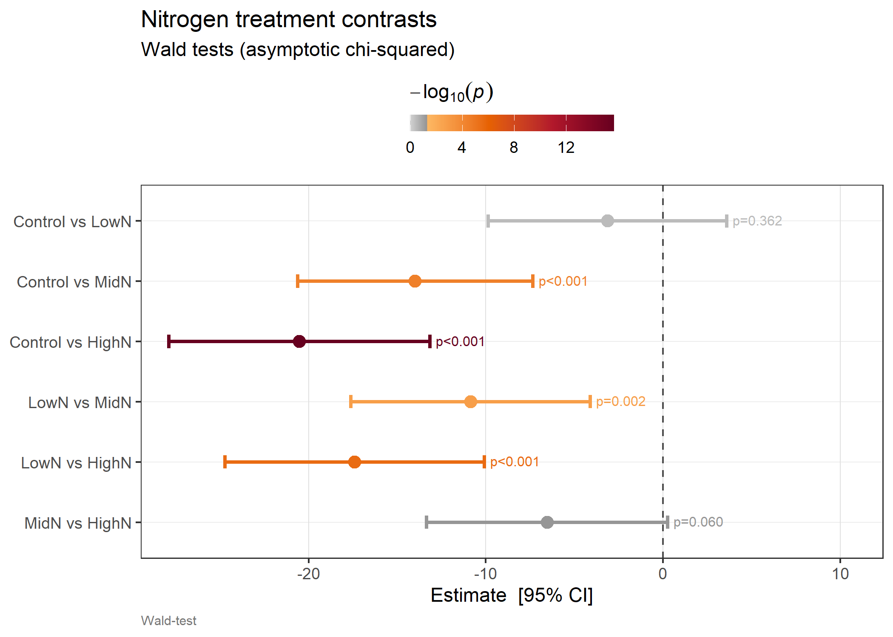

set.seed(42L)
treatments <- c("Control", "LowN", "MidN", "HighN")
n <- length(treatments)
mu <- c(45, 52, 61, 67) # known increasing trend
# Predicted values data frame
pv <- data.frame(
Treatment = factor(treatments, levels = treatments),
predicted.value = mu + stats::rnorm(n, 0, 2),
std.error = stats::runif(n, 1.5, 3.5),
status = factor(rep("Estimable", n)),
stringsAsFactors = FALSE
)
# Prediction error variance–covariance matrix
A <- matrix(stats::rnorm(n^2, 0, 0.4), n, n)
vcov <- crossprod(A) + diag(c(4, 5, 5, 6))
pred <- list(pvals = pv, vcov = vcov)Wald Tests on Fixed-Effect Contrasts
waldTest() and plot_waldTest()
Overview
waldTest() performs Wald tests on linear contrasts of predicted values obtained from predict(). Because it works entirely from a prediction list (predicted values + prediction error variance–covariance matrix), it requires no access to model internals and works with any mixed-model software that exposes a vcov-style prediction object — including ASReml-R V4.
Two complementary test types are available:
| Type | Null hypothesis | Use case |
|---|---|---|
"con" — contrast |
H_0: \mathbf{c}^\top\hat{\boldsymbol{\tau}} = 0 | Pairwise, treatment vs control, custom comparisons |
"zero" — joint zero |
H_0: \mathbf{Z}\hat{\boldsymbol{\tau}} = \mathbf{0} | Are a set of effects simultaneously zero? |
The companion function plot_waldTest() produces a publication-ready forest plot directly from the result.
Mathematical Framework
Predicted values and their variance
Let \hat{\boldsymbol{\tau}} = (\hat{\tau}_1, \ldots, \hat{\tau}_n)^\top be the vector of n predicted treatment effects (BLUEs or BLUPs), obtained from a mixed model with prediction error variance–covariance matrix
\operatorname{Var}(\hat{\boldsymbol{\tau}} - \boldsymbol{\tau}) = \mathbf{V}_{\hat{\boldsymbol{\tau}}}.
In ASReml-R V4 this is returned by predict(model, classify = ..., vcov = TRUE)$vcov.
Contrast tests
A contrast is a scalar linear combination \hat{c} = \mathbf{c}^\top\hat{\boldsymbol{\tau}} where \mathbf{c} is a user-specified contrast vector. The null hypothesis is
H_0: \mathbf{c}^\top\boldsymbol{\tau} = 0.
The estimated contrast and its standard error are
\hat{c} = \mathbf{c}^\top\hat{\boldsymbol{\tau}}, \qquad \operatorname{SE}(\hat{c}) = \sqrt{\mathbf{c}^\top \mathbf{V}_{\hat{\boldsymbol{\tau}}} \mathbf{c}}.
The Wald statistic is
W = \frac{\hat{c}^2} {\mathbf{c}^\top \mathbf{V}_{\hat{\boldsymbol{\tau}}} \mathbf{c}} = \frac{\bigl(\mathbf{c}^\top\hat{\boldsymbol{\tau}}\bigr)^2} {\mathbf{c}^\top \mathbf{V}_{\hat{\boldsymbol{\tau}}} \mathbf{c}} \;\overset{H_0}{\sim}\; \chi^2_1.
When an error degrees of freedom \nu is available (e.g. from a mixed model), the F-statistic F = W is referred to an F_{1,\nu} distribution, providing better finite-sample calibration.
Pairwise contrasts
For k treatment levels the \binom{k}{2} pairwise differences are a convenient special case. For levels i and j, the contrast vector \mathbf{c}_{ij} has +1 in position i, -1 in position j, and zeros elsewhere, so
\hat{c}_{ij} = \hat{\tau}_i - \hat{\tau}_j, \qquad \operatorname{Var}(\hat{c}_{ij}) = [\mathbf{V}_{\hat{\boldsymbol{\tau}}}]_{ii} - 2[\mathbf{V}_{\hat{\boldsymbol{\tau}}}]_{ij} + [\mathbf{V}_{\hat{\boldsymbol{\tau}}}]_{jj}.
Setting comp = "pairwise" in waldTest() generates all \binom{k}{2} contrasts automatically.
Custom contrast matrices
Multiple contrasts can be tested in a single call by supplying a contrast matrix \mathbf{C} (rows = contrasts, columns = levels). Each row \mathbf{c}_r^\top is tested independently:
W_r = \frac{\bigl(\mathbf{c}_r^\top\hat{\boldsymbol{\tau}}\bigr)^2} {\mathbf{c}_r^\top \mathbf{V}_{\hat{\boldsymbol{\tau}}} \mathbf{c}_r}, \quad r = 1, \ldots, m.
Joint zero tests
A joint zero test simultaneously tests whether a subset of q effects are all zero. Define the selection matrix \mathbf{Z} (q \times n) with a single 1 per row selecting the coefficients of interest. The null hypothesis is
H_0: \mathbf{Z}\boldsymbol{\tau} = \mathbf{0}.
The Wald statistic is
W = \hat{\boldsymbol{\tau}}^\top \mathbf{Z}^\top \bigl(\mathbf{Z}\,\mathbf{V}_{\hat{\boldsymbol{\tau}}}\,\mathbf{Z}^\top\bigr)^{-1} \mathbf{Z}\hat{\boldsymbol{\tau}} \;\overset{H_0}{\sim}\; \chi^2_q,
or F = W / q \sim F_{q,\nu} for the F-test form.
P-value adjustment
When many contrasts are tested the family-wise error rate (FWER) or false discovery rate (FDR) inflates. waldTest() passes all raw p-values within each group to p.adjust(). The key options are:
| Method | Controls | Best used when |
|---|---|---|
"none" |
— | Exploratory or single contrast |
"bonferroni" |
FWER (conservative) | Few contrasts, strict control needed |
"holm" |
FWER (less conservative) | Few to moderate contrasts |
"fdr" / "BH" |
FDR | Many contrasts, some true effects expected |
"BY" |
FDR (arbitrary dependence) | Dependent test statistics |
Setup
Simulated data — four nitrogen treatments
We simulate a prediction object for four nitrogen treatments with a known increasing yield response. This mirrors the structure returned by predict(model, classify = "Treatment", vcov = TRUE) from ASReml-R V4.
The predicted values and their standard errors:
pv[, c("Treatment", "predicted.value", "std.error")] Treatment predicted.value std.error
1 Control 47.74192 2.813985
2 LowN 50.87060 2.910130
3 MidN 61.72626 2.415484
4 HighN 68.26573 2.938225Example 1: Pairwise contrasts
The most common use case — test all \binom{4}{2} = 6 pairwise differences among the nitrogen treatments. Setting comp = "pairwise" generates the full contrast matrix automatically.
res1 <- waldTest(
pred,
cc = list(
list(coef = treatments, type = "con", comp = "pairwise")
)
)
res1$Contrasts Comparison Estimate Std.Error Wald.Statistic df P.Value
1 Control vs LowN -3.128687 3.432074 0.831019 1 0.361978
2 Control vs MidN -13.984340 3.382759 17.089991 1 0.000036
3 Control vs HighN -20.523808 3.762537 29.754616 1 0.000000
4 LowN vs MidN -10.855653 3.444802 9.930779 1 0.001625
5 LowN vs HighN -17.395122 3.733963 21.702757 1 0.000003
6 MidN vs HighN -6.539468 3.471193 3.549174 1 0.059575Comparison reads as "A vs B" where A carries the positive coefficient (i.e. \hat{\tau}_A - \hat{\tau}_B). Wald.Statistic = \hat{c}^2 / \widehat{\operatorname{Var}}(\hat{c}); df = 1 for all single-contrast rows; P.Value is from \chi^2_1.
The HighN vs Control contrast should be the most significant, reflecting the largest mean difference in the simulated data.
Example 2: Manual contrast vector
A manual contrast lets you specify exactly which comparison to make and how to label it. Here we test HighN minus Control using \mathbf{c} = (-1,\; 0,\; 0,\; 1)^\top — one element per level in coef order.
res2 <- waldTest(
pred,
cc = list(
list(
coef = treatments,
type = "con",
comp = c(-1, 0, 0, 1), # HighN - Control
group = list(left = "HighN", right = "Control")
)
)
)
res2$Contrasts Comparison Estimate Std.Error Wald.Statistic df P.Value
1 HighN vs Control 20.52381 3.762537 29.75462 1 0The group argument overrides the auto-generated label so the output reads "HighN vs Control".
Example 3: Custom contrast matrix
A contrast matrix \mathbf{C} (rows = contrasts, columns = levels) tests multiple specific comparisons in one call. Here we fit three polynomial contrasts across the four equally-spaced nitrogen levels.
# Orthogonal polynomial contrasts for 4 equally-spaced levels
C_poly <- matrix(
c(-3, -1, 1, 3, # linear trend
1, -1, -1, 1, # quadratic trend
-1, 3, -3, 1), # cubic trend
nrow = 3, byrow = TRUE
)
res3 <- waldTest(
pred,
cc = list(
list(
coef = treatments,
type = "con",
comp = C_poly,
group = list(left = c("Linear", "Quadratic", "Cubic"),
right = c("trend", "trend", "trend"))
)
)
)
res3$Contrasts Comparison Estimate Std.Error Wald.Statistic df P.Value
1 Linear vs trend 72.427078 11.997854 36.441380 1 0.000000
2 Quadratic vs trend 3.410782 4.815652 0.501646 1 0.478778
3 Cubic vs trend -12.043151 10.783552 1.247259 1 0.264077For a monotone nitrogen response we expect a strong linear trend and negligible quadratic or cubic components.
Example 4: Joint zero test
A joint zero test asks: are these effects simultaneously equal to zero? This uses type = "zero" and tests the q-dimensional null H_0: \mathbf{Z}\boldsymbol{\tau} = \mathbf{0}.
Here we test whether the three non-Control treatment effects are jointly zero — i.e. does nitrogen application have any effect at all?
res4 <- waldTest(
pred,
cc = list(
list(
coef = c("LowN", "MidN", "HighN"),
type = "zero",
group = "Nitrogen joint zero"
)
)
)
res4$Zero Test Wald.Statistic df P.Value
1 Nitrogen joint zero 1405.649 3 0df = 3 because three effects are tested simultaneously. The statistic follows \chi^2_3 under H_0.
Example 5: Combining contrast and zero tests
Both test types can be combined in a single cc list. Results are returned in separate $Contrasts and $Zero slots.
res5 <- waldTest(
pred,
cc = list(
list(coef = treatments,
type = "con", comp = "pairwise"),
list(coef = c("LowN", "MidN", "HighN"),
type = "zero",
group = "Nitrogen joint zero")
)
)
cat("--- Contrasts ---\n")--- Contrasts ---res5$Contrasts Comparison Estimate Std.Error Wald.Statistic df P.Value
1 Control vs LowN -3.128687 3.432074 0.831019 1 0.361978
2 Control vs MidN -13.984340 3.382759 17.089991 1 0.000036
3 Control vs HighN -20.523808 3.762537 29.754616 1 0.000000
4 LowN vs MidN -10.855653 3.444802 9.930779 1 0.001625
5 LowN vs HighN -17.395122 3.733963 21.702757 1 0.000003
6 MidN vs HighN -6.539468 3.471193 3.549174 1 0.059575cat("\n--- Zero test ---\n")
--- Zero test ---res5$Zero Test Wald.Statistic df P.Value
1 Nitrogen joint zero 1405.649 3 0Example 6: By-group testing
When predictions span multiple environments (e.g. a Treatment:Site classify), the by argument runs the same cc specification independently within each group. The grouping column is prepended to both output tables.
set.seed(123L)
sites <- c("Site1", "Site2", "Site3")
make_site_pv <- function(site, seed) {
set.seed(seed)
data.frame(
Treatment = factor(treatments, levels = treatments),
Site = factor(site),
predicted.value = mu + stats::rnorm(n, 0, 8),
std.error = stats::runif(n, 1.5, 4.0),
status = factor(rep("Estimable", n)),
stringsAsFactors = FALSE
)
}
all_pv <- do.call(rbind, mapply(make_site_pv, sites, c(1L, 2L, 3L),
SIMPLIFY = FALSE))
n_tot <- nrow(all_pv)
# Block-diagonal vcov — sites are independent
vcov3 <- matrix(0, n_tot, n_tot)
for (i in seq_along(sites)) {
idx <- ((i - 1L) * n + 1L):(i * n)
set.seed(i * 10L)
Ai <- matrix(stats::rnorm(n^2, 0, 0.4), n, n)
vcov3[idx, idx] <- crossprod(Ai) + diag(stats::runif(n, 3, 7))
}
pred3 <- list(pvals = all_pv, vcov = vcov3)res6 <- waldTest(
pred3,
cc = list(
list(coef = treatments, type = "con", comp = "pairwise")
),
by = "Site"
)
res6$Contrasts Site Comparison Estimate Std.Error Wald.Statistic df P.Value
1 Site1 Control vs LowN -13.480777 3.218163 17.547438 1 0.000028
2 Site1 Control vs MidN -14.326602 3.174292 20.370079 1 0.000006
3 Site1 Control vs HighN -39.773877 3.269625 147.978968 1 0.000000
4 Site1 LowN vs MidN -0.845825 3.605754 0.055026 1 0.814538
5 Site1 LowN vs HighN -26.293100 3.651546 51.847773 1 0.000000
6 Site1 MidN vs HighN -25.447275 3.365917 57.157842 1 0.000000
7 Site2 Control vs LowN -15.654110 3.773584 17.208724 1 0.000033
8 Site2 Control vs MidN -35.878079 3.542470 102.576057 1 0.000000
9 Site2 Control vs HighN -20.132311 3.769687 28.521777 1 0.000000
10 Site2 LowN vs MidN -20.223969 3.223612 39.359280 1 0.000000
11 Site2 LowN vs HighN -4.478201 3.011543 2.211205 1 0.137012
12 Site2 MidN vs HighN 15.745768 3.299688 22.770998 1 0.000002
13 Site3 Control vs LowN -12.355262 3.590364 11.842051 1 0.000579
14 Site3 Control vs MidN -25.765773 3.295750 61.119206 1 0.000000
15 Site3 Control vs HighN -20.478412 3.345789 37.462380 1 0.000000
16 Site3 LowN vs MidN -13.410512 3.393924 15.613004 1 0.000078
17 Site3 LowN vs HighN -8.123151 3.563535 5.196213 1 0.022636
18 Site3 MidN vs HighN 5.287361 3.341984 2.503047 1 0.113626The Site column identifies which group each contrast belongs to. The coef labels always refer to within-group row positions.
Multi-factor by
When predictions cross two or more factors (e.g. Treatment:Site:Year), pass a character vector to by. The levels are pasted into a composite key and the output column is named accordingly:
# Illustrative — would require a Treatment:Site:Year classify
res_sy <- waldTest(
pred_site_year,
cc = list(list(coef = treatments, type = "con", comp = "pairwise")),
by = c("Site", "Year")
)
# Output column named "Site:Year"Example 7: F-tests
When an error degrees of freedom \nu is available (e.g. model$nedf from ASReml-R), replacing the asymptotic \chi^2 with an F_{1,\nu} distribution gives better-calibrated p-values in small samples. Set test = "F" and supply df_error.
# Simulate a realistic denominator df (e.g. from a field trial model)
df_error_sim <- 54L
res7 <- waldTest(
pred,
cc = list(list(coef = treatments, type = "con", comp = "pairwise")),
test = "F",
df_error = df_error_sim
)
res7$Contrasts Comparison Estimate Std.Error F.Statistic df P.Value
1 Control vs LowN -3.128687 3.432074 0.831019 1 0.366030
2 Control vs MidN -13.984340 3.382759 17.089991 1 0.000125
3 Control vs HighN -20.523808 3.762537 29.754616 1 0.000001
4 LowN vs MidN -10.855653 3.444802 9.930779 1 0.002651
5 LowN vs HighN -17.395122 3.733963 21.702757 1 0.000021
6 MidN vs HighN -6.539468 3.471193 3.549174 1 0.064964The column is now F.Statistic (= Wald statistic for single contrasts). P-values are from F_{1,54} rather than \chi^2_1 — slightly more conservative in small samples.
Example 8: P-value adjustment
With \binom{4}{2} = 6 pairwise comparisons the chance of at least one false positive is inflated. The adjust argument applies p.adjust() across all contrasts within each group.
# Bonferroni
res_bon <- waldTest(pred,
cc = list(list(coef = treatments, type = "con",
comp = "pairwise")),
adjust = "bonferroni")
# FDR (Benjamini–Hochberg)
res_fdr <- waldTest(pred,
cc = list(list(coef = treatments, type = "con",
comp = "pairwise")),
adjust = "fdr")
cat("--- Bonferroni adjusted ---\n")--- Bonferroni adjusted ---res_bon$Contrasts[, c("Comparison", "P.Value")] Comparison P.Value
1 Control vs LowN 1.000000
2 Control vs MidN 0.000214
3 Control vs HighN 0.000000
4 LowN vs MidN 0.009752
5 LowN vs HighN 0.000019
6 MidN vs HighN 0.357450cat("\n--- FDR (BH) adjusted ---\n")
--- FDR (BH) adjusted ---res_fdr$Contrasts[, c("Comparison", "P.Value")] Comparison P.Value
1 Control vs LowN 0.361978
2 Control vs MidN 0.000071
3 Control vs HighN 0.000000
4 LowN vs MidN 0.002438
5 LowN vs HighN 0.000010
6 MidN vs HighN 0.071490Bonferroni multiplies each p-value by the number of tests (capped at 1); FDR is less conservative and generally preferred when many contrasts are tested and some true effects are expected.
Forest plots with plot_waldTest()
plot_waldTest() turns a waldTest() result directly into a forest plot. Each contrast is shown as a filled circle with horizontal confidence interval bars. Points are coloured by -\log_{10}(p): non-significant results appear in grey; significant results follow a warm gradient from gold through orange to dark red as evidence strengthens. The raw p-value is printed beside each row.
Basic forest plot
p1 <- plot_waldTest(res1)
print(p1)
The vertical dashed line at x = 0 is the reference for no difference. The colour bar maps -\log_{10}(p) — results in the warm-gradient zone are significant at alpha = 0.05.
By-group with faceting (facet = TRUE)
When waldTest() was called with by, facet = TRUE (the default) produces one panel per group with free y-scales, making it easy to compare effect sizes across environments.
p_facet <- plot_waldTest(res6, facet = TRUE)
print(p_facet)
By-group on one panel (facet = FALSE)
facet = FALSE places all groups on a single panel with dotted horizontal separator lines between groups. Useful for compact side-by-side comparison when the number of contrasts per group is small.
p_single <- plot_waldTest(res6, facet = FALSE)
print(p_single)
Adjusting the CI level and significance threshold
ci_level controls the width of the CI arms; alpha shifts the colour-scale break between grey (non-significant) and the warm gradient.
# 99% CI arms; stricter significance threshold
p_99 <- plot_waldTest(res1, ci_level = 0.99, alpha = 0.01)
print(p_99)
Extracting the plot data
return_data = TRUE returns the tidy data frame used internally to build the plot, giving full control for bespoke customisation.
df <- plot_waldTest(res1, return_data = TRUE)
df[, c("label", "Estimate", "CI_lower", "CI_upper", "P.Value",
"neg_log10_p", "significant", "p_label")] label Estimate CI_lower CI_upper P.Value neg_log10_p
1 Control vs LowN -3.128687 -9.855428 3.5980544 0.361978 0.4413178
2 Control vs MidN -13.984340 -20.614426 -7.3542542 0.000036 4.4436975
3 Control vs HighN -20.523808 -27.898245 -13.1493710 0.000000 15.6535598
4 LowN vs MidN -10.855653 -17.607341 -4.1039651 0.001625 2.7891466
5 LowN vs HighN -17.395122 -24.713555 -10.0766890 0.000003 5.5228787
6 MidN vs HighN -6.539468 -13.342881 0.2639453 0.059575 1.2249359
significant p_label
1 FALSE p=0.362
2 TRUE p<0.001
3 TRUE p<0.001
4 TRUE p=0.002
5 TRUE p<0.001
6 FALSE p=0.060The ggplot object can be extended with + in the usual way:
p_custom <- plot_waldTest(res1) +
ggplot2::ggtitle("Nitrogen treatment contrasts",
subtitle = "Wald tests (asymptotic chi-squared)")
print(p_custom)
ASReml-R V4 integration
In practice waldTest() is most commonly called via its S3 method waldTest.asreml(), which calls predict() internally. The workflow below requires an ASReml-R V4 licence and is shown for reference only.
library(asreml)
# Fit a mixed model
model <- asreml(
yield ~ Treatment,
random = ~ Variety + Site + Site:Variety,
data = trial_data
)
# --- Option A: S3 convenience method ---
# predict() is called internally; df_error taken from model$nedf automatically
res_asr <- waldTest(
model,
classify = "Treatment",
cc = list(list(coef = c("Control", "LowN", "MidN", "HighN"),
type = "con", comp = "pairwise")),
test = "F",
adjust = "fdr"
)
# --- Option B: explicit predict() then waldTest() ---
pred_asr <- predict(model, classify = "Treatment:Site", vcov = TRUE)
res_by <- waldTest(
pred_asr,
cc = list(list(coef = c("Control", "LowN", "MidN", "HighN"),
type = "con", comp = "pairwise")),
by = "Site",
test = "F",
df_error = model$nedf,
adjust = "fdr"
)
# Forest plot — one facet per site
plot_waldTest(res_by, facet = TRUE)Summary
| Task | Specification |
|---|---|
| All pairwise differences | list(coef = levs, type = "con", comp = "pairwise") |
| Single manual contrast | list(coef = levs, type = "con", comp = c(...)) |
| Multiple contrasts | list(coef = levs, type = "con", comp = matrix(...)) |
| Joint zero test | list(coef = levs, type = "zero", group = "label") |
| Both types | Combine in the same cc list |
| By-group | Add by = "ColumnName" to waldTest() |
| Multi-factor by | Add by = c("Site", "Year") |
| F-test | Add test = "F", df_error = model$nedf |
| Adjust p-values | Add adjust = "fdr" (or "bonferroni", "holm", "BY") |
| Forest plot | plot_waldTest(res) |
| Export plot data | plot_waldTest(res, return_data = TRUE) |
References
Wald, A. (1943). Tests of statistical hypotheses concerning several parameters when the number of observations is large. Transactions of the American Mathematical Society, 54(3), 426–482.
Searle, S.R., Casella, G. & McCulloch, C.E. (1992). Variance Components. Wiley.
Kenward, M.G. & Roger, J.H. (1997). Small sample inference for fixed effects from restricted maximum likelihood. Biometrics, 53(3), 983–997.
Benjamini, Y. & Hochberg, Y. (1995). Controlling the false discovery rate: a practical and powerful approach to multiple testing. Journal of the Royal Statistical Society B, 57(1), 289–300.